On a single late-summer night in 1962, four boys in Modesto, California, pointed their cars toward the neon glow of the main street and unknowingly drove straight into film history. Eleven years later, the movie that captured that night — American Graffiti — was made for a meager $777,000 and went on to gross more than $140 million, becoming one of the most profitable films in cinematic history. That astonishing gap between cost and reward is one of the many facts preserved in the beautifully crafted visual presentation this article is built on, a deck assembled in Gemini Notebook and titled Deconstructing American Graffiti: The Last Great Night of Youth.
The deck describes itself in a single, striking sentence: “A visual autopsy of George Lucas’s 1973 masterpiece — an immersive time capsule of the asphalt arena, the golden-oldies soundscape, and a generation standing on the precipice of cultural upheaval.” It is a rich source for English learners: every frame carries polished, idiomatic prose about film history, youth culture, and storytelling. Below, the entire presentation is quoted, explained, and turned into vocabulary work, interactive flashcards, and a comprehension quiz, so that by the end of the page the reader has absorbed real language and real culture at the same time. Pay attention to how much history a single “minor” teen comedy can hold.
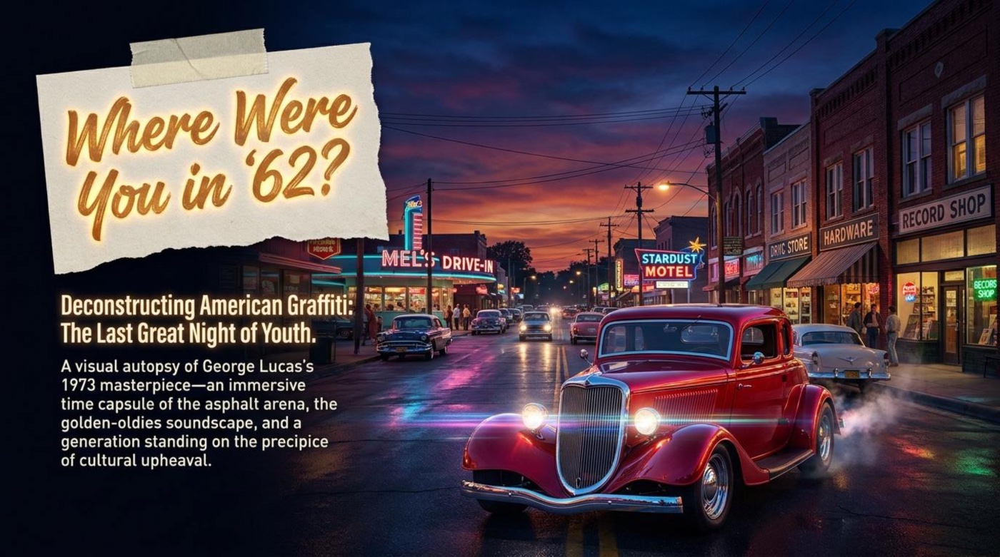
📚One Night on the Main Drag: Content and Context
An Autocine Artifact
The deck opens its story with the film’s credentials, quoted here in full: “Directed by George Lucas and produced by Francis Ford Coppola, American Graffiti opened to modest expectations. Set in Modesto, California, on Sunday, September 2, 1962, the film captures a fleeting cultural instant: the American teenager suspended between the innocence of childhood and the heavy responsibilities of adulthood.” Two of the most famous names in American cinema — Lucas as director, Coppola as producer — joined forces on a project nobody expected to succeed. The ticket stub on the page marks the release date, August 11, 1973, and lists the writers as George Lucas, Gloria Katz, and Willard Huyck.
The premise fits in one line, exactly as the deck states it: “Four high school buddies spend one last night cruising before college.” It is important to understand that this simplicity is the film’s engine: everything else — the music, the cars, the romances, the fears — grows out of that single night. For a language learner, the sentence “Directed by X and produced by Y, [title] opened to modest expectations” is a ready-made template for describing any film or book: it packs the creators, the reception, and the setting into two elegant clauses. Notice also the word cruising, which reappears throughout the deck as the film’s central activity.
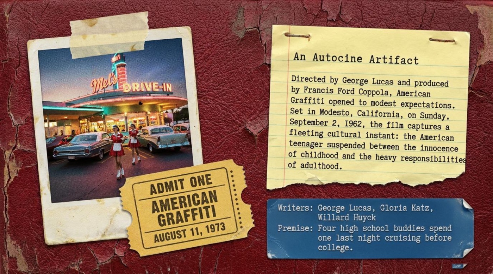
The Asphalt Arena
One of the deck’s strongest frames explains the world the characters live in: “In 1962, the attitudes of the 1950s still reigned. The world revolved around the car. It was not merely transportation; it was a status symbol, a roaming space for romance and rebellion, and a way of ‘putting wheels on restlessness.’ Tribal acceptance or rejection hinged upon success or failure in the asphalt arena of the main drag.” Every clause here rewards study. The car is described as “a status symbol, a roaming space for romance and rebellion” — a triple structure that learners can copy for almost any cultural object. The idiom “putting wheels on restlessness” compresses an entire sociology of youth into four words: teenage energy finally given somewhere to go.
The deck illustrates the idea through the film’s social rules. A boy’s standing among his friends — the “tribal acceptance” the text mentions — literally hinged upon, that is, depended completely on, how he performed on the strip. The clearest example is Terry “The Toad” Fields, a nerd who borrows a flashy car for one night precisely because without wheels he is invisible to the tribe. A practical takeaway: whenever a learner meets the pattern “X hinged upon Y”, it is worth memorizing as a unit, because it instantly upgrades a sentence from “depended on” to something precise and formal.
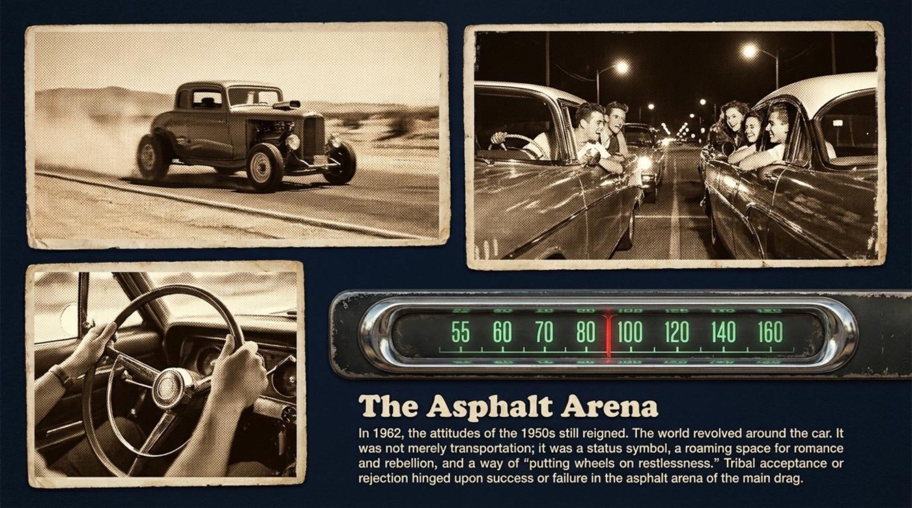
Crisscrossing Choices
The deck maps the four friends on a hand-drawn chart called Crisscrossing Choices, with confidence running up one axis and the final decision — staying in Modesto or leaving town — running along the other. Its four character cards are quoted in full here. On the confident-but-staying side: “John Milner: Aging drag-race king stuck in his legacy. (Epilogue: Killed by drunk driver, 1964.)” and “Steve Bolander: The golden boy who gets cold feet and stays for his high-school sweetheart, Laurie. (Epilogue: Insurance agent in Modesto.)”
On the leaving side: “Curt Henderson: The reluctant intellect who finally boards the plane. (Epilogue: Writer in Canada.)” and “Terry ‘The Toad’ Fields: The nerd borrowing a ride to taste glory for one night. (Epilogue: MIA in Vietnam, 1965.)” The chart teaches two things at once. First, it is a masterclass in compressed characterization — each card is a two-word label plus a fate, a pattern learners can reuse in essays and presentations. Second, it introduces dramatic irony: the epilogue texts the deck quotes tell the audience what the characters cannot know. A useful exercise for any reader is to redraw this two-axis map for the characters of a book currently being read in English; describing a chart aloud — “confidence rises from bottom to top” — is also excellent speaking practice.
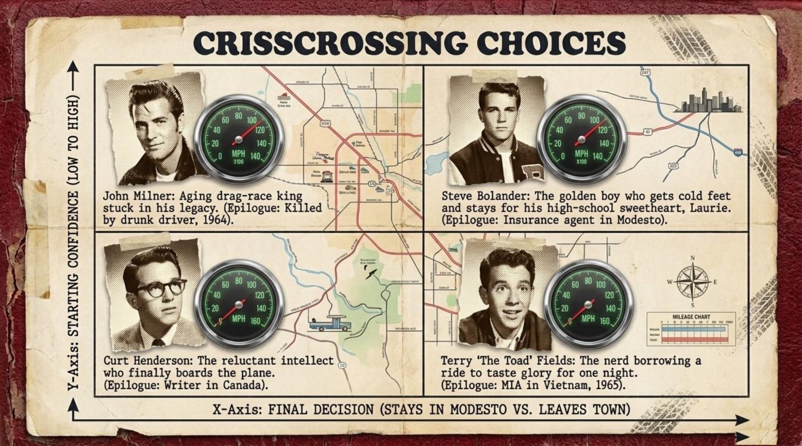
The Illusions of the Night
The deck devotes a frame to the film’s most haunting image: “Throughout the night, Curt desperately chases a mysterious blonde in a white Thunderbird who mouths ‘I love you’ at a stoplight. She functions as the film’s ultimate symbol of the unattainable — what critic Roger Ebert called ‘the vision of beauty always glimpsed at the next intersection.’ She represents the tantalizing unknown of the future, testing the boundary between illusion and reality.” The passage is worth reading twice, because it models how critics write: a plot fact, then a bold interpretive claim (“the ultimate symbol of the unattainable”), then an outside authority, then a broader meaning.
The real-life illustration inside the material itself is Curt’s behavior: an intelligent boy about to leave for college spends his final hours chasing a stranger he never actually meets. The deck’s framing shows learners that in film analysis, an object — a car, a face, a streetlight — can carry an argument. The practical advice is simple: collect phrases like “functions as,” “serves as,” “stands for” and “represents.” With those four verbs, a learner can discuss any symbol in English without repeating themselves.
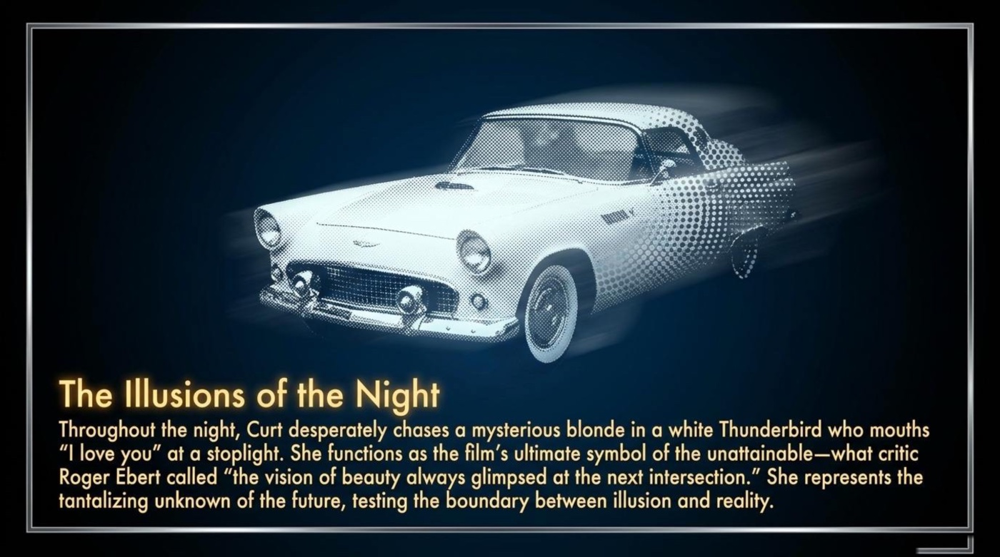
Wall-to-Wall Sound on a Gamble
The soundtrack frame is built like three vinyl records, and each carries a quotable fact. The first: “Clearing the licensing rights cost approximately $90,000 — over 10% of the film’s entire budget.” In other words, Lucas spent a tenth of his money before filming a single scene, purely for the right to use real songs. The second record states the emotional logic: “The emotional heartbeat of the night, perfectly synchronized to the scenes.” The third explains the breakthrough: “American Graffiti eschewed a traditional orchestral score. Instead, Lucas built the film upon a revolutionary diegetic soundtrack — music the characters themselves hear.”
This is the deck’s most technically rich passage, and it rewards close reading. The verb “eschewed” — a formal way of saying “deliberately avoided” — shows how elevated film vocabulary can be. The term “diegetic” comes from film studies and describes sound that belongs to the story world itself. The real-life lesson inside the material is that the radio is not decoration: Wolfman Jack’s broadcasts and the car radios are the film’s connective tissue. For learners, the advice is to steal the sentence pattern “Instead of X, [subject] built Y upon Z” for describing any creative decision, from a music playlist to a study plan.
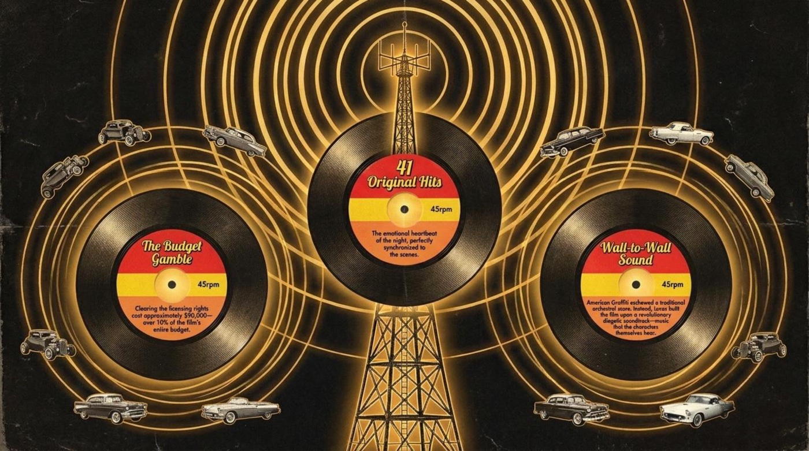
The Ethereal Navigator
Wolfman Jack receives his own frame, and the deck treats him as pure myth: “Broadcasting over the airwaves, disc jockey Wolfman Jack serves as a mythological, omnipresent Greek chorus for the teenagers. When Curt visits the radio station in the dead of night, the Wolfman becomes his unseen guide, pushing Curt toward his destiny with the advice to ‘get your ass in gear’ and see the world.” A Greek chorus is the collective voice in ancient drama that comments on the action, and the claim is that Wolfman’s radio voice floats above the whole night, commenting on it. The slang advice he gives Curt — “get your ass in gear” — means, in polite English, “start taking action now,” and the contrast between the mythic framing and the street-level slang is exactly the register mixture the film is famous for.
The example from the material is the secret the scene keeps: the teenagers spend the night worshipping a voice, and only Curt discovers that the voice belongs to an ordinary man in a small studio. The takeaway for learners is the phrase “in the dead of night” (deep in the night, when everything is silent) and the verb “push someone toward their destiny,” both reusable far beyond film discussion. It should be noted that the Wolfman was played by the real DJ Wolfman Jack, appearing as himself — the myth walks into the film and sits at the microphone.
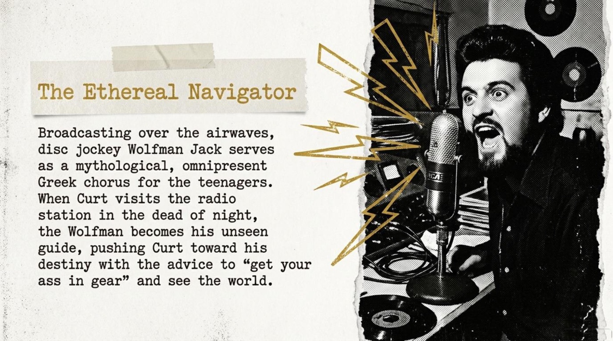
A Cast of Chrome
The deck gives the machines a billboard of their own, titled A Cast of Chrome, and its three captions are quoted exactly. Of the first car: “The Yellow ’32 Deuce Coupe — driven by John Milner. The fastest car in the valley; a symbol of raw 1950s hot rod power and a crown that is slipping.” Of the challenger: “The Black ’55 Chevy — driven by Bob Falfa (Harrison Ford). The aggressive, out-of-town challenger looking to dethrone the king.” Of the borrowed machine: “The White ’58 Impala — borrowed by Terry ‘The Toad’. A temporary costume of coolness that allows a nerd to punch above his social weight class.”
Three sentences, three complete character arcs. The cars are not vehicles but costumes and crowns: Milner’s coupe is a kingship losing its shine, Falfa’s Chevy is an invading army, and Toad’s Impala is a disguise that will be ripped off by midnight. The boxing metaphor “punch above his social weight class” — to compete beyond what one’s status should allow — has crossed from sport into everyday business English and deserves a permanent place in a learner’s notebook. A practical exercise is to describe one’s own belongings this way: which of them are costumes, which are crowns, and which are quietly slipping.
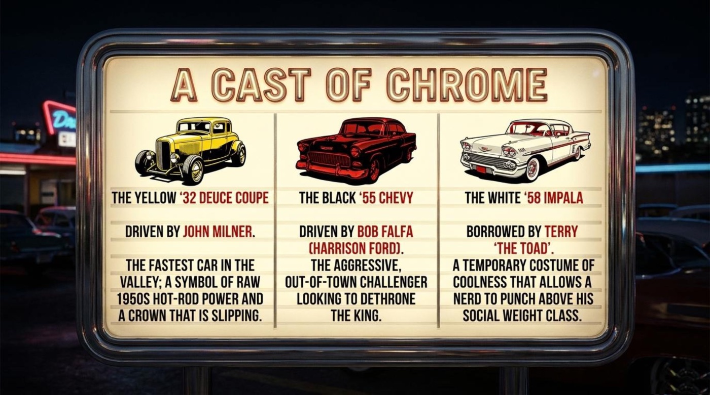
Paradise Road
The night’s climax gets its own frame with a burning headline. The deck writes: “The drag race at dawn shatters the innocent revelry of the night. When Bob Falfa’s tire blows out, rolling the ’55 Chevy into a fiery ditch, the brush with death forces absolute clarity. John realizes his reign as the local street-racing king is meaningless, while Steve abandons his college plans, clinging to Laurie in the wreckage. The endless night is officially over.” The sentence “the brush with death forces absolute clarity” is the deck’s thesis in miniature: a near-tragedy strips away all the posturing of the evening at once.
The illustration from the material is bitter and precise: the race that was supposed to crown the king instead ends with the challenger’s car burning in a ditch, and the “king’s” victory suddenly feels worthless. Steve, who spent the whole night bargaining about whether to stay faithful to Laurie, holds her in the wreckage and lets the argument go. For learners, the frame is a small anthology of useful collocations: “innocent revelry,” “a brush with death,” “forces absolute clarity,” and “the endless night is officially over.” Each one transfers directly to real storytelling about any dramatic experience.
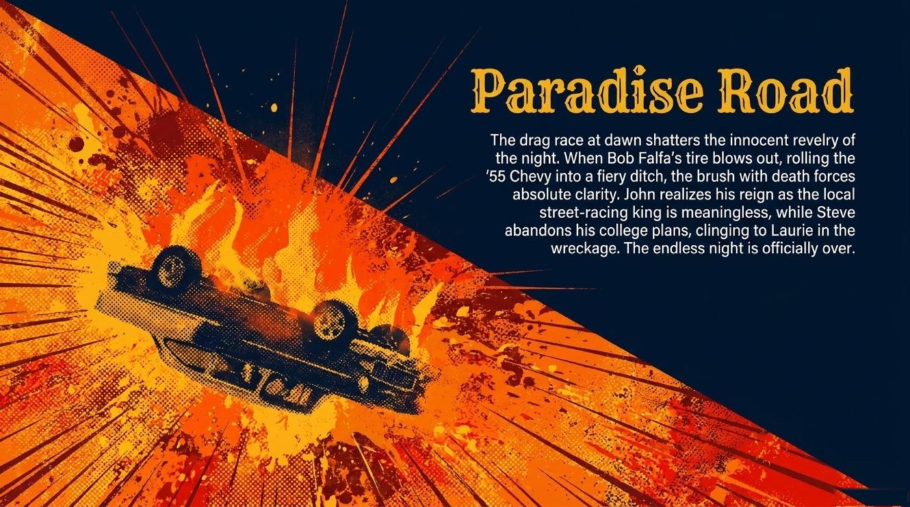
The Airport Departure
After the fire comes the quietest frame of the deck. Its text reads: “In the harsh light of Monday morning, Curt finally boards the plane, leaving the asphalt arena behind. Looking down from the window, he spots the pristine white Thunderbird driving along a parallel country road. It is a quiet, profound acknowledgment that some mysteries — and the youth they represent — must remain forever untouched.” The contrast between the two worlds is built into the geography: the plane climbs, the car stays on the ground, and the two vehicles travel on parallel roads that will never meet.
The deck’s phrase “the harsh light of Monday morning” is a gift to English learners, because English constantly contrasts night with morning to talk about illusions versus reality — the same family of expressions as “wake-up call.” The example from the material is cinematic rather than spoken: Curt does not chase the Thunderbird this time, and that refusal is the whole point. The practical advice: when describing any personal turning point in English, borrow this frame’s structure — a hard fact of timing, a single visual detail, and a reflective closing sentence about what must remain unresolved.
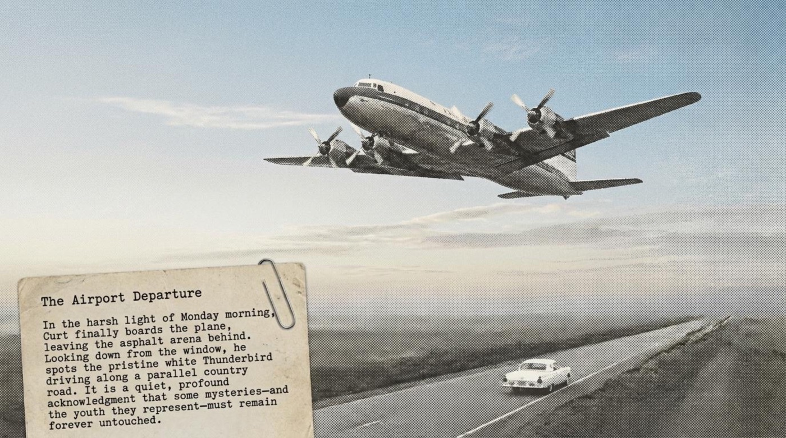
The Avalanche
Then the deck turns cold. Its frame titled The Avalanche states: “The film famously ends with sudden, blunt title cards detailing the male characters’ fates. John Milner: Killed by a drunk driver in December 1964. Terry Fields: Reported missing in action near An Lộc, Vietnam, 1965.” Beneath those blunt lines it places Roger Ebert’s judgment: “The teenagers in American Graffiti are… unaware that an avalanche is about to land on them.” The avalanche, in this interpretation, is the 1960s itself — the wars, the assassinations, the turmoil waiting just around the corner of the calendar.
The contrast is the lesson: one paragraph earlier the boys were arguing about radio songs and girls, and two short sentences later the text is a casualty list. The example from the material is John Milner’s fate specifically — the character the whole deck has treated as the “king” of the strip is killed off-screen by an ordinary drunk driver, the least glamorous ending imaginable. For learners, this frame demonstrates the power of short declarative sentences in English; after long, musical paragraphs, a bare “Killed by a drunk driver in December 1964” hits hardest. Restraint, not decoration, creates the shock.
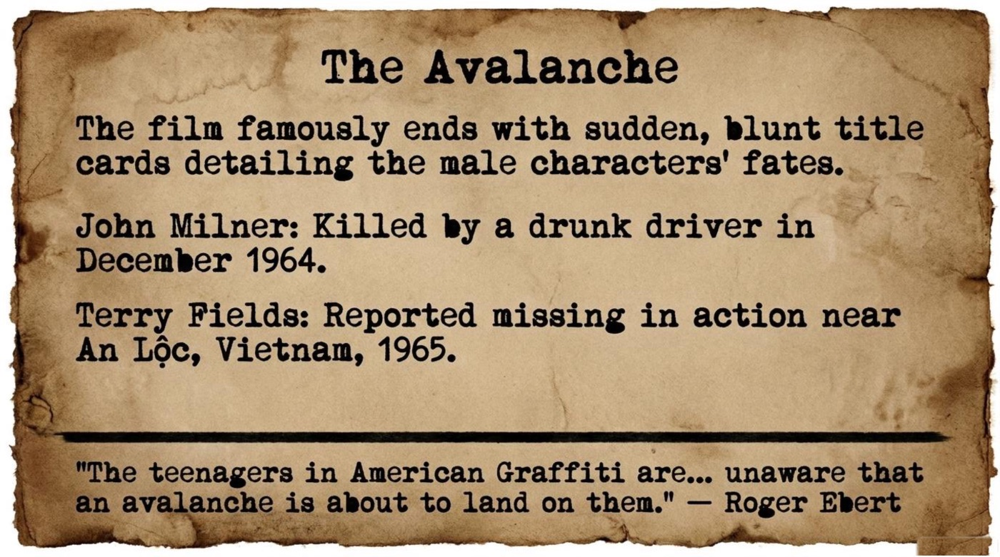
September 1962: The Exact Precipice
The deck then zooms out from the street to the whole country, drawing a road that starts in sunny nostalgia and cracks apart into darkness. On the bright side it writes: “The 1950s Era: Pure rock-and-roll, postwar optimism, greaser subculture, high school innocence.” On the dark side: “The Late 1960s Era: JFK Assassination (Nov 1963), The British Invasion (1964), Vietnam War escalation, counterculture movement.” In the middle stands the film’s neon sign: “The precise setting of the film. Two months before the Cuban Missile Crisis.” And the caption underneath delivers the deck’s historical thesis: “1962 captures American society standing on the exact precipice of massive, irreversible cultural trauma.”
This is why the setting matters more than the plot. The film is not remembering a golden age; it is photographing the last two months before the world changes permanently — the Cuban Missile Crisis of October 1962, then the Kennedy assassination a year later, then the war that claims one of the four friends. The example from the material is the deck’s own image design: the road surface literally cracks in half between the two eras. The language tip: “standing on the precipice of” plus a noun — change, war, adulthood, disaster — is a high-value phrase for essays about any historical turning point.
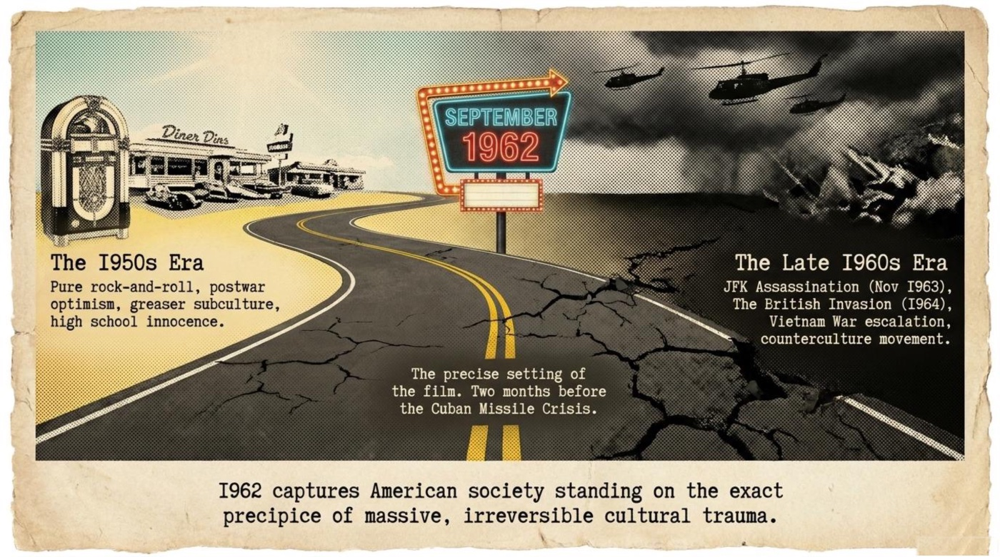
The Director’s Gamble
Behind the nostalgia stood a production fight, and the deck records it like evidence on a clipping board: “Produced under severe studio skepticism, Lucas and his crew engineered a gritty, documentary-like aesthetic using B-movie tactics.” The facts follow: “Location: Petaluma, CA (after San Rafael revoked permits on day two).” — the town literally changed mid-production. “Schedule: Shot entirely at night over just 28 grueling days.” “Format: Filmed using Techniscope cameras to yield a cheap, 16mm-style widescreen documentary feel.” And on a diner guest check, the budget: “A meager $777,000.”
The example from the material is the aesthetic itself: because the studio expected nothing, Lucas was free to shoot like a documentarian — grainy, improvised, on real streets — and that “cheapness” became the film’s signature realism. The language takeaway is the word “meager” (disappointingly small) and the phrase “severe studio skepticism,” both essential for describing any underdog project. The practical advice is to notice how the deck builds credibility: it never says “it was hard”; it lists dates, dollar amounts, and days of shooting, and lets numbers make the argument.
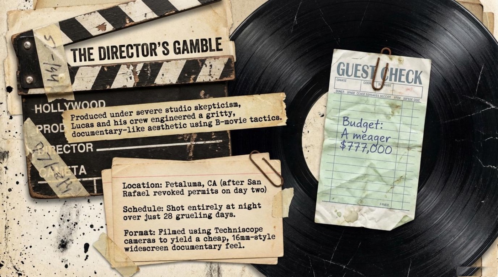
A Nostalgia Empire
The final production frame is the revenge of the underdog. The deck declares: “American Graffiti became one of the most profitable films in cinematic history.” Then the receipts: “Box Office: Grossed over $140M initially, eventually surpassing $200M (adjusting to over $500M today).” “The Ripple Effect: The profits allowed Lucas to establish his own creative empire and fund his passion project, Star Wars (1977).” “Cultural Legacy: Sparked a massive 1950s nostalgia wave, directly inspiring the TV hit Happy Days and birthing the blueprint for the summer blockbuster.” A golden registry seal on the frame marks the film’s place on the U.S. National Film Registry.
Every number here repays attention. A film nobody wanted returned several hundred times its budget, and — the deck’s most delightful fact — without American Graffiti there is no Star Wars: the profits from one nostalgia movie bought the galaxy far, far away. The phrase “the ripple effect” is worth memorizing for describing how one small event spreads outward. The advice for learners: practice saying this story aloud — “It opened to modest expectations, yet it grossed over one hundred and forty million dollars” — because narrating surprising contrasts with “yet” and “despite” is one of the most reliable ways to sound fluent.
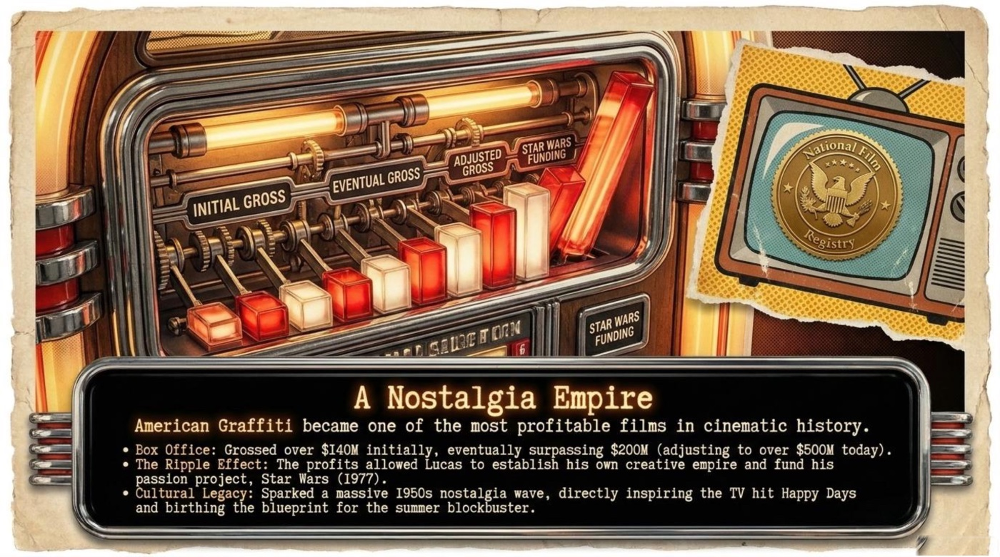
💡Vocabulary and Language Takeaways
The deck is unusually generous to language learners: its short essays are dense with idioms, film vocabulary, and critic-ready phrases. This section works through the eight highest-value items one by one, always in the same order — the phrase itself, its literal sense, its figurative or contextual sense, the example from the material, and the way the deck itself uses and explains the word. After the list, the interactive flashcards turn the same eight terms into a self-test. Work through both: the list builds depth, the cards build speed.
main drag
noun phrase · informal, American English
Literal meaning: drag is an old word for a street or road, so the “main drag” is simply the principal street of a town.
Figurative / contextual meaning: the social stage of the film — the street where the whole teenage world gathers, performs, and judges itself every night.
Example from the material: “Tribal acceptance or rejection hinged upon success or failure in the asphalt arena of the main drag.” The street is described as an arena, a place of contest — not asphalt for driving but a stage for status.
How the material explains it: the deck defines the street’s function through the car culture frame, showing that the “world revolved around the car” and that the main drag is where that revolution happened. In other words, the term is explained socially, not geographically: it is the place where reputation is won and lost.
cruising
verb / gerund
Literal meaning: moving slowly and smoothly, originally about ships “cruising” calm waters for pleasure rather than rushing to a destination.
Figurative / contextual meaning: driving up and down the main street at walking-pace speed with friends, to see people and — just as importantly — to be seen.
Example from the material: “Four high school buddies spend one last night cruising before college.” The whole film happens inside this gerund: the night has no destination, only motion.
How the material explains it: the deck treats cruising as the film’s premise itself, and its car-culture frame adds the why — the car was “a roaming space for romance and rebellion.” The deck thereby shows that cruising is not transport; it is a social ritual with wheels.
cold feet
idiom · noun phrase
Literal meaning: physically frozen feet — which have nothing to do with the idiom’s real sense.
Figurative / contextual meaning: a sudden loss of courage right before an important step: a wedding, a departure, a big decision.
Example from the material: “Steve Bolander: The golden boy who gets cold feet and stays for his high-school sweetheart, Laurie.” Steve’s college dream melts the moment he imagines life without her.
How the material explains it: the deck embeds the idiom inside a character card and lets the epilogue — “Insurance agent in Modesto” — deliver the consequence. The lesson is structural: cold feet are followed by staying, and staying is followed by an ordinary life, a cause-and-effect chain the learner can quote directly.
a crown that is slipping
metaphor · noun phrase
Literal meaning: a monarch’s headpiece slowly falling off the head.
Figurative / contextual meaning: fading supremacy — being the best, but visibly losing the throne to younger or hungrier rivals.
Example from the material: “The fastest car in the valley; a symbol of raw 1950s hot-rod power and a crown that is slipping.” The sentence is about a car, yet every word describes its driver, John Milner.
How the material explains it: the deck links the crown to the challenger’s arrival — Bob Falfa is “looking to dethrone the king” — so the metaphor is completed by a second royal image. Notice the elegance: king, throne, crown, reign all belong to one family, and a good English writer keeps metaphors inside one family rather than mixing them.
punch above his social weight class
idiom · from boxing
Literal meaning: in boxing, fighting — and beating — opponents sorted into a heavier weight division than one’s own.
Figurative / contextual meaning: performing at a level above what one’s status, money, or background should allow.
Example from the material: “A temporary costume of coolness that allows a nerd to punch above his social weight class.” Terry borrows the white Impala and, for one evening, the costume works.
How the material explains it: the deck attributes the punching power to the costume, not the boy — the borrowed car does the fighting. That nuance makes the idiom precise: the phrase always implies borrowed or unnatural advantage, which is why business English uses it for small companies beating giants.
diegetic soundtrack
film-studies term · adjective + noun
Literal meaning: from the Greek diegesis, “narrative world” — so “diegetic” means belonging inside the story itself.
Figurative / contextual meaning: music whose source is physically present in the scene — car radios, diner jukeboxes, a live band — as opposed to an invisible orchestra added in post-production.
Example from the material: “Lucas built the film upon a revolutionary diegetic soundtrack — music the characters themselves hear.”
How the material explains it: the deck defines the term by opposition and by consequence: the film “eschewed a traditional orchestral score,” and instead the radio becomes “the emotional heartbeat of the night, perfectly synchronized to the scenes.” The definition, the contrast, and the effect arrive in three separate sentences — a textbook example of how to explain a technical term in writing.
Greek chorus
literary term · noun phrase
Literal meaning: in ancient Greek drama, the group of performers who sang and spoke between scenes, commenting on the story.
Figurative / contextual meaning: any voice that floats above the action and tells the audience how to feel about it — a narrator, a commentator, a friend who explains everything.
Example from the material: “Broadcasting over the airwaves, disc jockey Wolfman Jack serves as a mythological, omnipresent Greek chorus for the teenagers.”
How the material explains it: the deck stacks three adjectives — mythological, omnipresent, plus “broadcasting over the airwaves” — to justify the comparison: the Wolfman is everywhere at once, above the plot, yet he never drives a car in the story. The frame then deepens the term by showing the chorus touching one character directly when Curt visits the studio.
on the precipice of
idiom · prepositional phrase
Literal meaning: a precipice is a sheer cliff face; to stand on its edge is to be one step from falling.
Figurative / contextual meaning: to be at the exact final moment before something enormous and usually irreversible happens.
Example from the material: “…a generation standing on the precipice of cultural upheaval.” The deck’s history frame repeats it almost word for word: “1962 captures American society standing on the exact precipice of massive, irreversible cultural trauma.”
How the material explains it: the deck uses the phrase twice — once for the teenagers, once for the whole country — and anchors it with dates: the Cuban Missile Crisis two months away, the JFK assassination thirteen months away. The repetition teaches the phrase’s force: it always pairs with a named, datable event about to strike.
Flashcards: Test Yourself
The eight key terms above now reappear as flip cards. Tap or click a card to turn it over and check the meaning, the example, and a note on why the term matters; the Flip all cards button turns the whole set at once for a quick review round. Keyboard users can move between cards with Tab and flip with Enter or Space.
📌Deeper Meaning: Metaphors and Symbols
The deck is not just a summary of a film; it is an argument built from four recurring symbols. Understanding them turns the evening in Modesto into a story about growing up, and it gives the learner a ready-made framework for analyzing almost any film in English.
The White Thunderbird: The Unattainable
The blonde driver appears three times and never once speaks aloud; she only mouths the words “I love you” through glass at a stoplight. The deck calls her “the film’s ultimate symbol of the unattainable” and seals the interpretation with Roger Ebert’s phrase, “the vision of beauty always glimpsed at the next intersection.” The symbol’s power lies in its choreography: she is always at the next intersection — forever one block ahead, never reachable, gone the moment Curt arrives. In the final image of the film she reappears on a parallel road beside the departing plane, close enough to see and too far to touch. The deck’s reading is that she “represents the tantalizing unknown of the future”: Curt can board that plane only by accepting that some mysteries stay unsolved.
Cars as Costumes and Crowns
The deck’s car frame turns machines into identities, and its captions form a complete symbolic system: the deuce coupe is “a crown that is slipping,” the black Chevy is “the aggressive, out-of-town challenger looking to dethrone the king,” and the borrowed Impala is “a temporary costume of coolness.” The system explains every plot decision: Milner races because a king must defend his crown; Falfa travels from out of town because challengers always come from outside; Terry’s whole evening of false confidence collapses the moment he returns the car. The insight for the reader is that status objects — cars, phones, clothes, titles — always work this way in stories, and the deck teaches the exact English to say so: costume, crown, throne, challenger, reign.
Wolfman Jack: The Ethereal Navigator
The deck’s most poetic claim concerns a radio DJ: “disc jockey Wolfman Jack serves as a mythological, omnipresent Greek chorus for the teenagers,” and in the studio scene he becomes Curt’s “unseen guide, pushing Curt toward his destiny.” The symbol works because radio in 1962 really was a disembodied god: a voice that entered the car, commanded the playlist of the whole night, and connected every character without ever being seen. When Curt finally meets the man behind the voice and still receives the command to “get your ass in gear” and see the world, myth and reality touch — and the myth wins. The deck thereby suggests that guidance at crossroads moments often comes from voices we half-believe in; the film simply makes the metaphor literal.
The Avalanche: History About to Land
The deck’s darkest symbol arrives with its own quotation: “The teenagers in American Graffiti are… unaware that an avalanche is about to land on them.” — Roger Ebert. An avalanche is silent while it hangs above the valley, and that is exactly the deck’s point: the boys argue about dates and drag races while the “massive, irreversible cultural trauma” of the late 1960s gathers on the mountaintop. The two blunt title cards — a drunk driver in December 1964, An Lộc in 1965 — are the avalanche’s first falling rocks. The cracked road in the deck’s history frame completes the image: the film stands “on the exact precipice,” and everything beneath the neon is already splitting. The symbol teaches the reader how nostalgia works: it is always photographed from the future, and the sweetness is inseparable from what is coming.
✅Comprehension Check: The Interactive Quiz
The quiz below gathers the whole lesson into eight questions — facts, vocabulary in context, a true-or-false check, and a fill-in-the-blank — drawn directly from the material quoted in this article. Each answer receives instant feedback: the correct option lights up green, a wrong pick shakes and glows red, and a short explanation appears under the question. The score counter and the row of progress dots track every step, and a result panel appears at the end with a reset button for another round. Answer honestly before scrolling back for corrections; the deck’s facts have a way of sticking after one honest attempt.
8/8
🌅The Last Great Night — and What It Leaves Us
The deck closes by zooming out one final time, and its closing lines deserve to be quoted whole: “American Graffiti transcends nostalgic comedy. It is a brilliantly executed, bittersweet monument to an innocent world — and an age — that can now only be visited in memory.” And then the final verdict, in one clean sentence: “Not only a great movie, but a brilliant work of historical fiction.” The film that studio executives dismissed as a cheap teen picture outlived them all, funded Star Wars, fueled Happy Days, and taught Hollywood how to sell summer itself.
The main takeaway for a language learner flows straight from that final idea. A story pinned to one precise night — one date, one town, forty-one real songs, four boys at one crossroads — teaches culture and vocabulary together better than any list of isolated words ever could. The words learned here work the same way: main drag, cruising, cold feet, a crown that is slipping, punch above one’s weight class, diegetic soundtrack, Greek chorus, and on the precipice of all belong to living English, and each is now anchored to a scene that makes it unforgettable. The call to action is simple and enjoyable: replay the quiz until the dots turn green, flip the cards once more tomorrow, watch the film with its soundtrack, and then retell the last great night of Modesto in your own English — a paragraph, a voice message, a story for a friend. Memory, the deck reminds us, is the only place that innocent age still exists; language is the vehicle that gets a learner there.
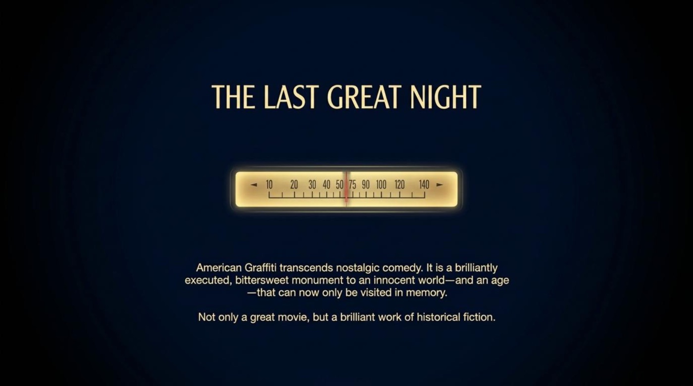
📎Lesson Files
The complete visual presentation used for this article opens in a new tab, exactly as it was designed:
📄 american-graffiti.pdf